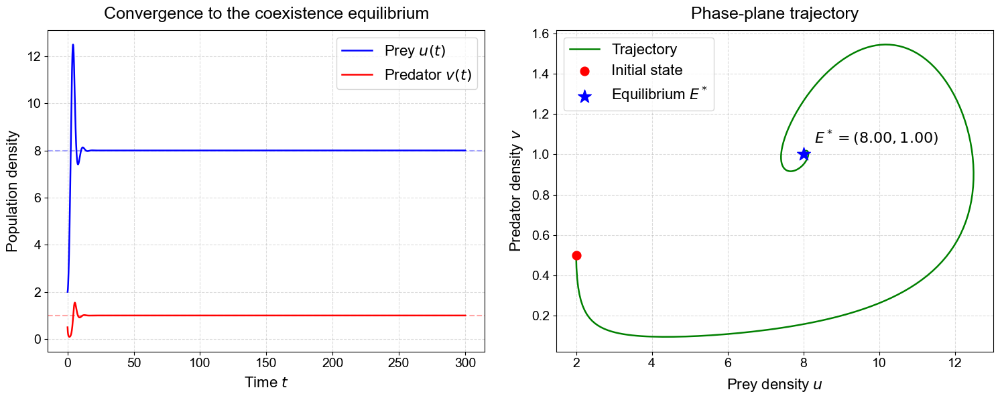
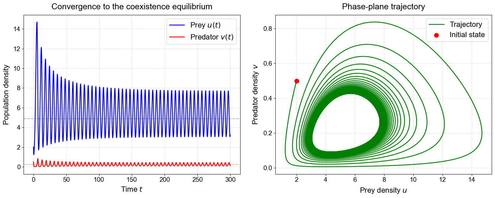
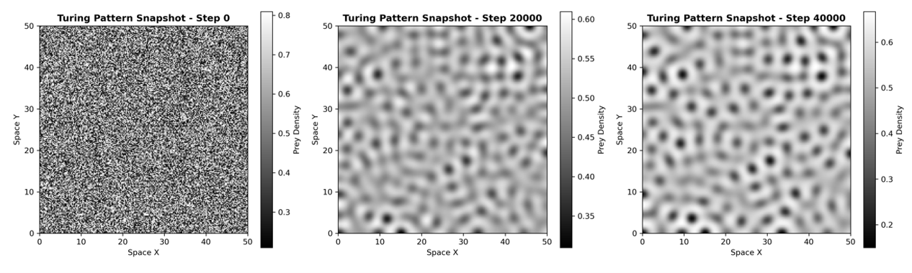
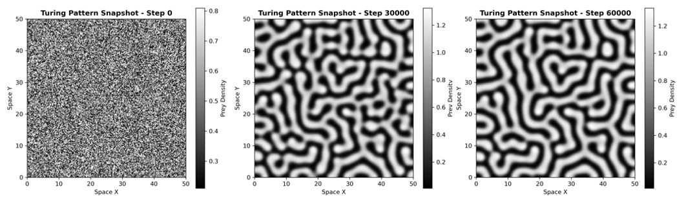

Turing Instability and Spatio-temporal Pattern Evolution in Predator-Prey Systems
Background
Reaction-diffusion systems provide a mathematical framework for understanding how spatial patterns emerge in biological systems. Although diffusion often acts as a stabilizer, facilitating a smooth transition of a substance from an area of high concentration to one of low concentration. Turing showed that diffusion can also destabilize a homogeneous equilibrium and generate self-organized spatial patterns.
This project investigates how diffusion reshapes the dynamics of a predator-prey system. Beginning with a spatially homogeneous model, we first analyze the temporal stability of the ecological equilibrium and then introduce diffusion to study the emergence of spatially heterogeneous structures. The work focuses on the transition from uniform coexistence to specific pattern formation.
Mathematical Model
The predator-prey dynamics are modeled with a Beddington-DeAngelis functional response, which accounts for predator interference during predation. Prey growth follows a logistic law, while predator dynamics include conversion efficiency and natural mortality.
Spatially homogeneous ODE model
Reaction-diffusion PDE model
Stability Analysis
The homogeneous equilibrium is first studied without diffusion. Linearizing the reaction terms gives a Jacobian matrix whose trace and determinant determine local temporal stability. A stable coexistence equilibrium becomes the baseline state for testing whether diffusion can introduce spatial instability.


Diffusion-Driven Instability
After diffusion is introduced, the same equilibrium can become unstable for nonzero spatial wavenumbers. To analyze this process, the reaction-diffusion system is linearized around a homogeneous steady state and the perturbations are expanded into spatiotemporal Fourier modes.
General reaction-diffusion form and perturbation
Linearized perturbation equations
Fourier-mode expansion
Eigenvalue system for each wavenumber
Hopf and Turing Conditions
Hopf bifurcation breaks temporal symmetry and produces oscillatory dynamics at zero spatial wavenumber. Turing instability breaks spatial symmetry and generates stationary spatial patterns at a nonzero wavenumber.
Instability classification


References
- Zhang L., Zhang F., and Ruan S. Linear and weakly nonlinear stability analyses of Turing patterns for diffusive predator-prey systems in freshwater marsh landscapes. Bulletin of Mathematical Biology, 79, 560-593, 2017.
- Wang W., Zhang L., Xue Y., and Jin Z. Spatiotemporal pattern formation of Beddington-DeAngelis-type predator-prey model. arXiv:0801.0797, 2008.
- von Hardenberg J., Meron E., Shachak M., and Zarmi Y. Diversity of vegetation patterns and desertification. Physical Review Letters, 87, 198101, 2001.
- Ermentrout B. Stripes or spots? Nonlinear effects in bifurcation of reaction-diffusion equations on the square. Proceedings of the Royal Society A, 434, 413-417, 1991.